Sunda Islands
Bali to Alor.

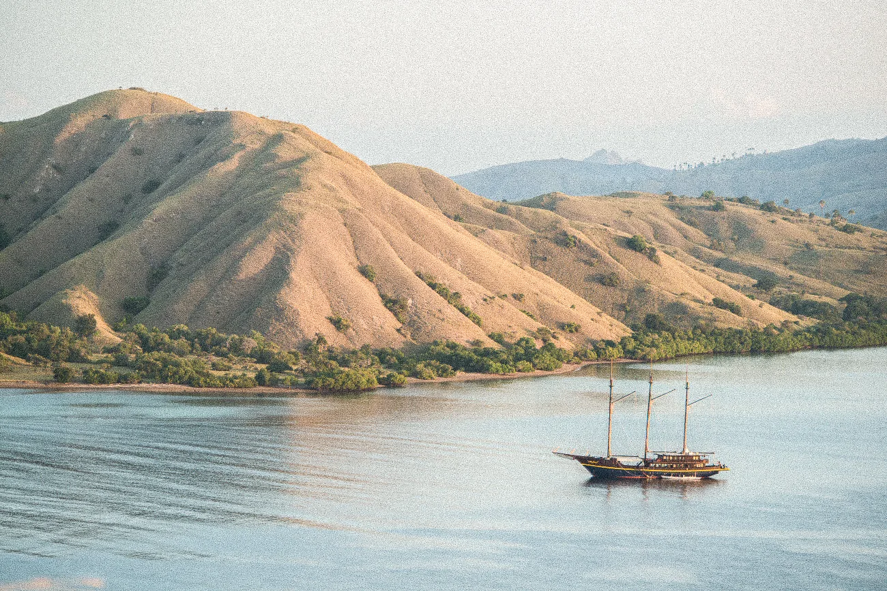
East of Bali the map breaks into the Lesser Sunda Islands, a line of islands running towards Timor: Lombok, Sumbawa, Komodo, Flores, then Solor, Lembata, Pantar and Alor.
Small islands, deep straits, volcanoes on every horizon. It is the part of Indonesia most divers have heard of, and also the part that keeps surprising the ones who thought they knew it.
Diving:
Manta stations, whale sharks at the bagans, soft coral walls in the south, clean black sand macro, and night dives people talk about for years.
Topside:
Komodo dragons, deer on the beach, Tambora and Kelimutu, ikat villages, Alor's moko drums, Larantuka's Portuguese Easter.
What makes it different:
The only region where a single trip crosses the Wallace Line, with warm clear water and cooler feeding grounds an hour apart.
Seasons we are there:
October, November and April to June.
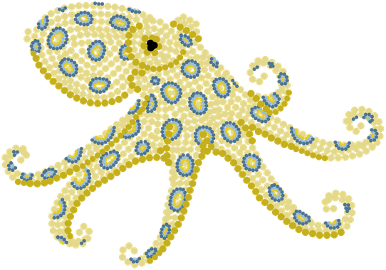
Key Info
SUBREGIONS
The Lombok Strait, between Bali and Lombok.
Sumbawa, with Moyo, Saleh Bay and Sangeang Api. Komodo National Park, north and south. The north coast of Flores. The Solor and Alor archipelago. The Savu Sea coasts to the south.
book your stay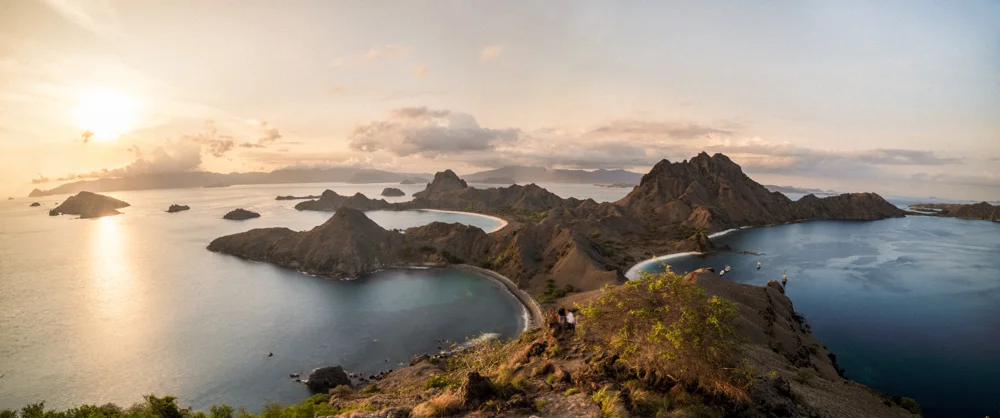
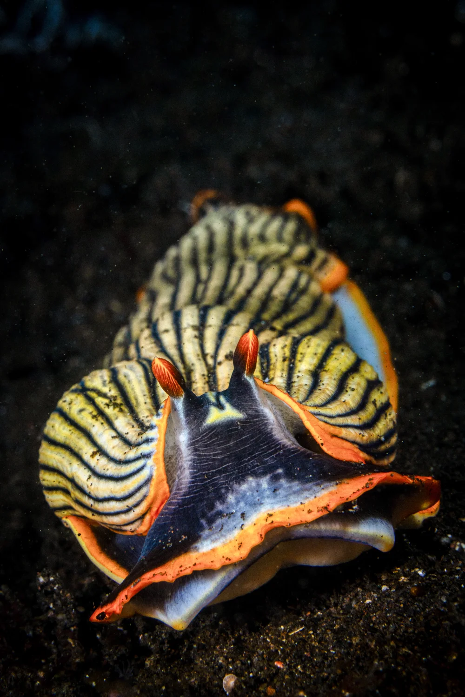
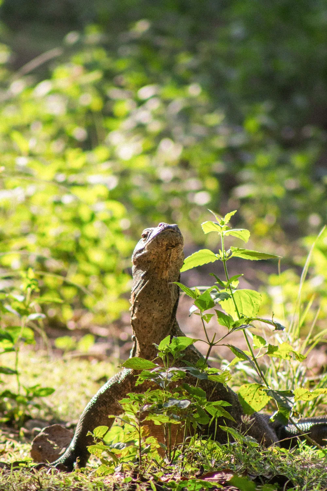
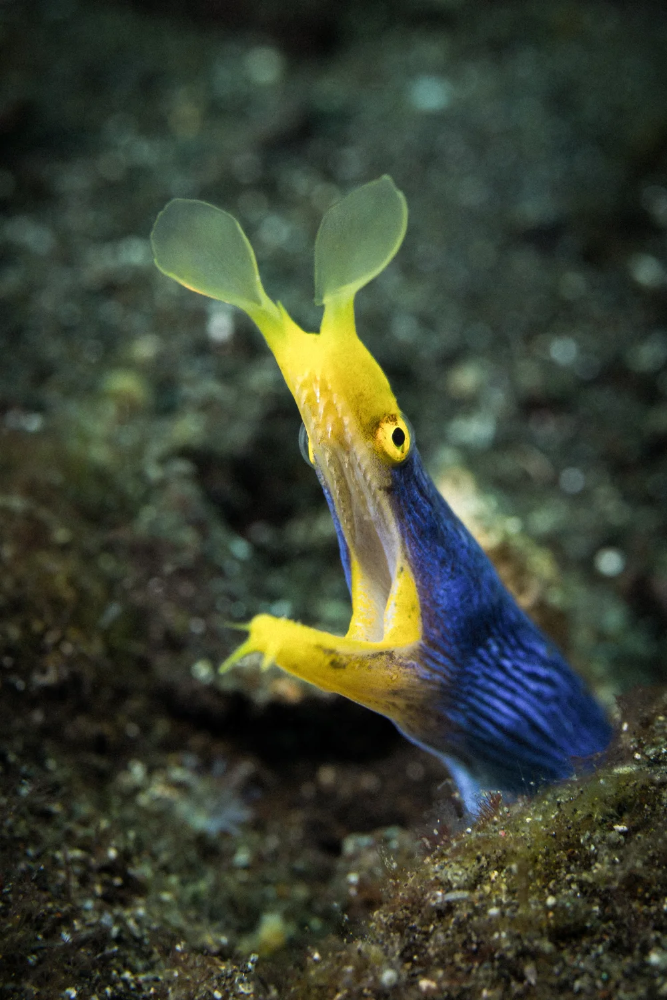
Explore the Sunda Islands
Routes through the Sunda Islands.

The Line Nobody Can See
In the 1850s Alfred Russel Wallace noticed that the birds of Bali and the birds of Lombok belonged to different worlds. Bali had woodpeckers and barbets, Lombok had cockatoos and megapodes, and the strait between them is not wide. He was right, and the boundary he drew still holds. On the western side you find the animals of Asia, monkeys and squirrels among them. East of the Lombok Strait begins Wallacea, a zone that was never joined to Asia or to Australia, where animals arrived by chance and then had millions of years to become something else. The Komodo dragon is the famous result. The stranger one is on Flores, where caves have given up the bones of pygmy elephants alongside Homo floresiensis, a hominin barely a meter tall who lived here until surprisingly recently.
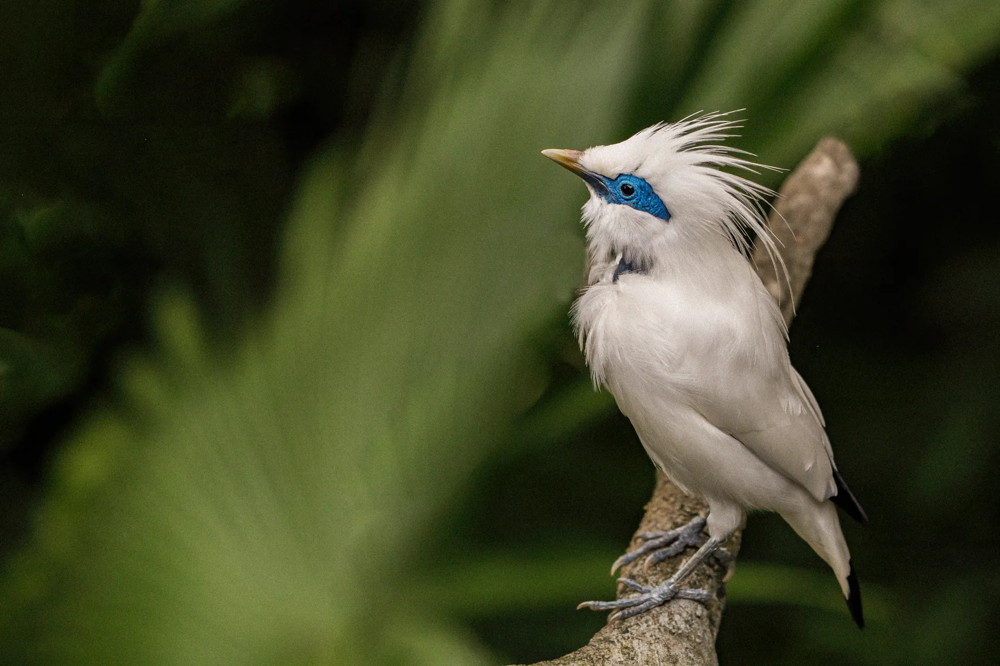
Strong currents,
cold upwellings,
warm reefs.
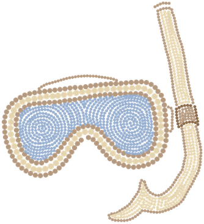
Dozens of languages, sometimes several on one island. Catholic, Muslim, Protestant and older traditions living side by side, often with a church village and a mosque village in sight of each other. Larantuka and Solor carry a Portuguese inheritance from the 1500s, most visible in the Easter processions that still fill Larantuka every year. Ikat weaving is a living craft, different on every island, and in Alor the moko, small bronze drums of uncertain origin, are still counted as wealth and still given as bride price.
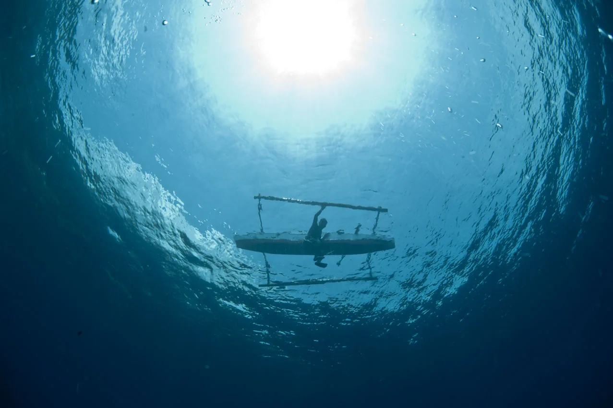
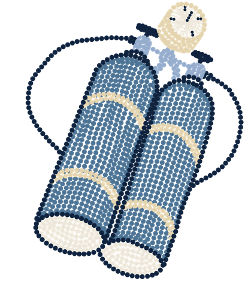
Why the Diving
Works
The Pacific drains into the Indian Ocean through these islands, a movement of water called the Indonesian Throughflow, and the narrow straits accelerate it. Seasonally, deep water rises to the surface in the south and brings food with it. That is the engine behind everything: reefs that grow fast, fish that gather in numbers, and predators that know exactly where to be. North coasts tend to be warm and clear, southern coasts richer and greener, and the two trade places through the year. We sail this region in the weeks when both halves are at their most enjoyable at the same time, which is a narrower window than most schedules admit, and it is the reason our dates here are what they are.
book your stay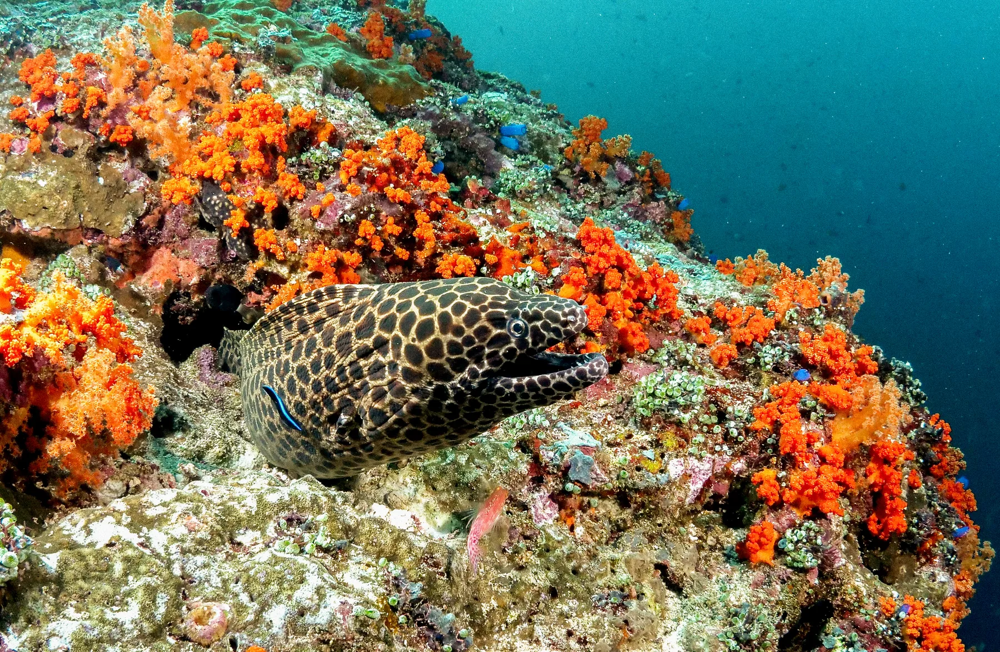
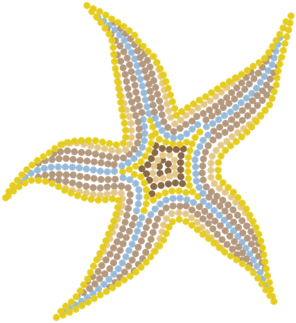
The color
The southern side of this region is where the reefs stop looking like reefs elsewhere. Cooler, food-rich water suits invertebrates rather than hard coral, so the walls and slopes of southern Komodo, southern Alor and the Savu Sea coasts are upholstered in soft coral, crinoids, tunicates, sponges and sea apples in reds, oranges, yellows and purples that photograph as though the saturation slider has been abused. There is barely a bare patch of rock. It is one of the most distinctive underwater landscapes in Indonesia and a large part of why people come back.
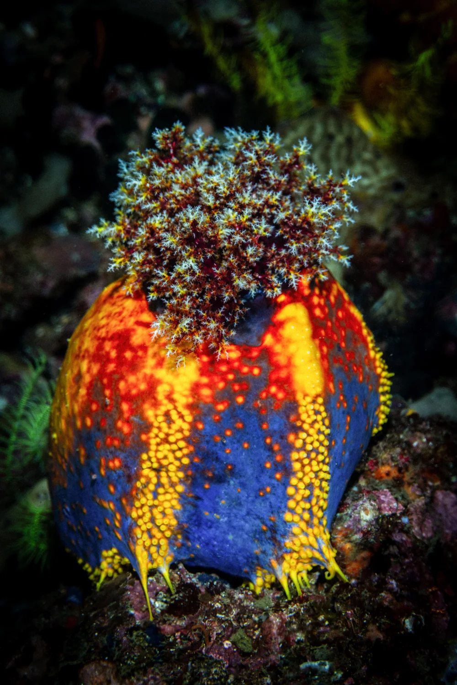
Big Animals
Mantas are the reliable ones. They circle the cleaning stations at Karang Makassar, stack up in the flow at Manta Alley and feed along the shallows off Sumbawa, often several at a time and often close enough to be a problem for a wide-angle lens. Whale sharks feed under the fishing platforms in Saleh Bay at first light, vertical at the surface, unbothered by people in the water. Further east, the Alor and Solor archipelago opens onto very deep water, and with it comes the chance of something considerably rarer: thresher sharks on the deeper corners, hammerheads moving along the outer walls, and molas that turn up months outside the season anyone expects them. Reef sharks, dogtooth tuna, schooling jacks and barracuda are part of the daily furniture.
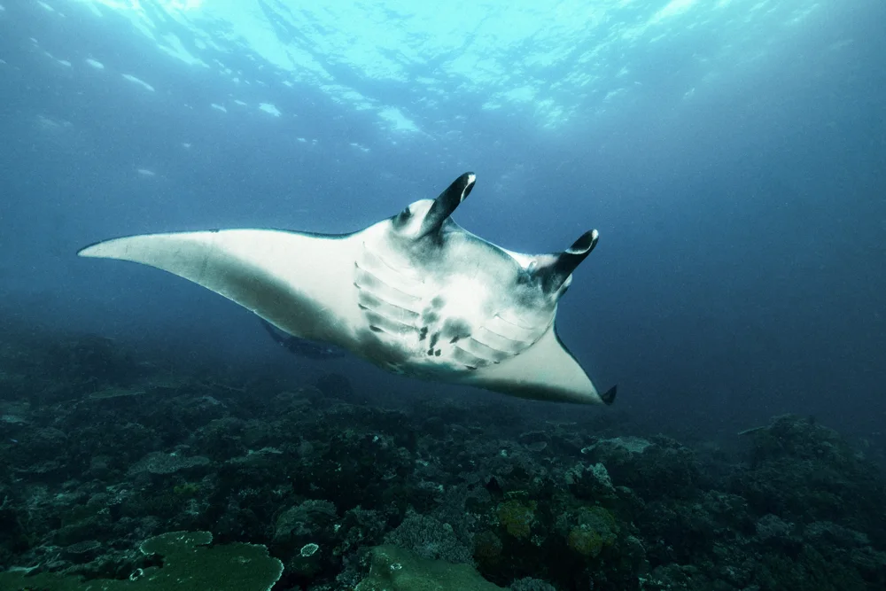
The Small Things
The black volcanic sand of Alor and Sumbawa is clean, fertile and full. Rhinopias sitting in the open. Hairy and painted frogfish. Ornate and robust ghost pipefish, blue-ringed octopus, bobtail squid, harlequin shrimp, Coleman shrimp riding fire urchins, zebra crabs, pygmy seahorses on their sea fans, nudibranchs that take a book and an argument to name, and mandarinfish coming out at dusk. The night diving across the whole region is exceptional.
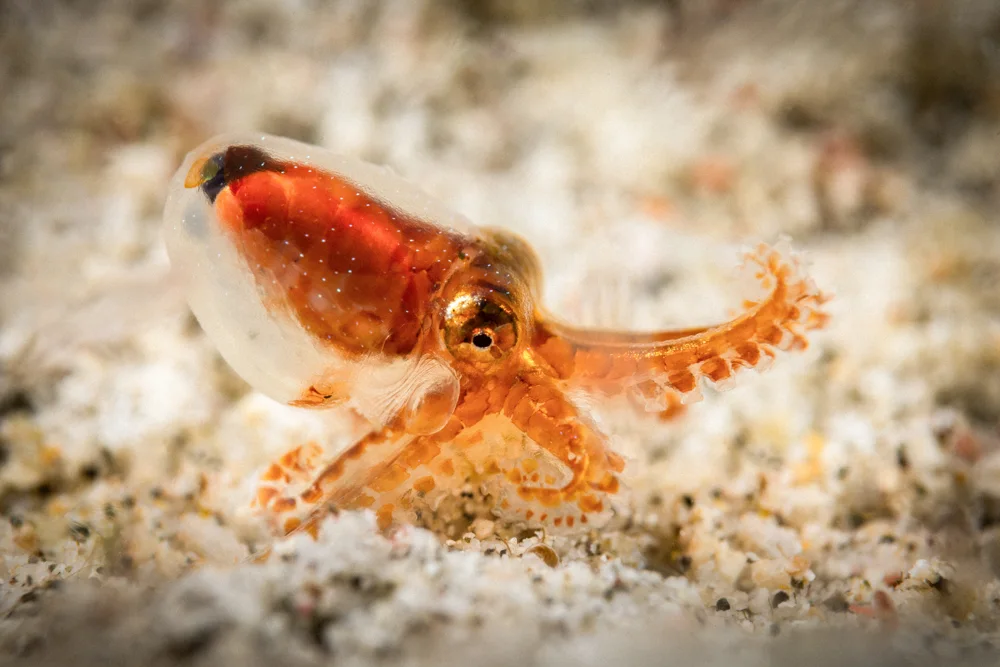
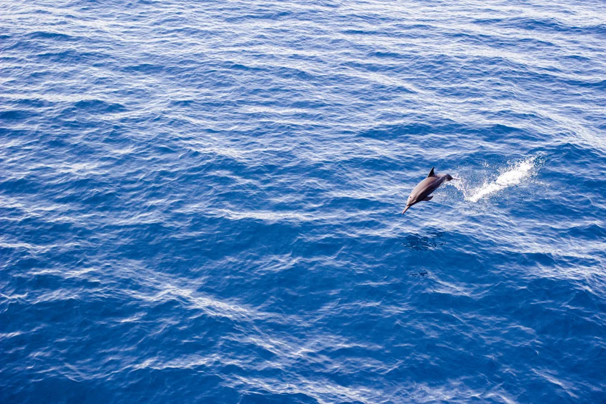
Whales, Dolphins
and the Villages
That Hunt Them
The Alor and Solor straits are one of the great marine mammal corridors on earth. Sperm whales are present much of the year, blue whales pass through on migration, and pilot whales, melon-headed whales, spinner dolphins and, occasionally, orcas move through the same water. Crossings here are spent watching the horizon. Two villages have built their lives around this. Lamalera on Lembata still hunts sperm whales from open wooden boats with hand harpoons, a traditional subsistence practice shared out across the whole community. Lamakera on Solor was for generations a manta-hunting village, and since Indonesia declared the world's largest manta sanctuary in 2014 it has been working through a difficult transition towards conservation and tourism. Neither place is a comfortable postcard, and both are a real part of what this region is.
Volcanoes
and Dry Hills
For a region near the equator this one is unexpectedly dry: savanna, lontar palms and burnt gold hillsides rather than rainforest. Rinjani towers over Lombok. Tambora on Sumbawa erupted in 1815 in the largest explosion in recorded history and cooled the entire planet for a year. Kelimutu on Flores holds three crater lakes that change color independently. There are also yellow-crested cockatoos and megapodes that incubate their eggs in warm volcanic sand.
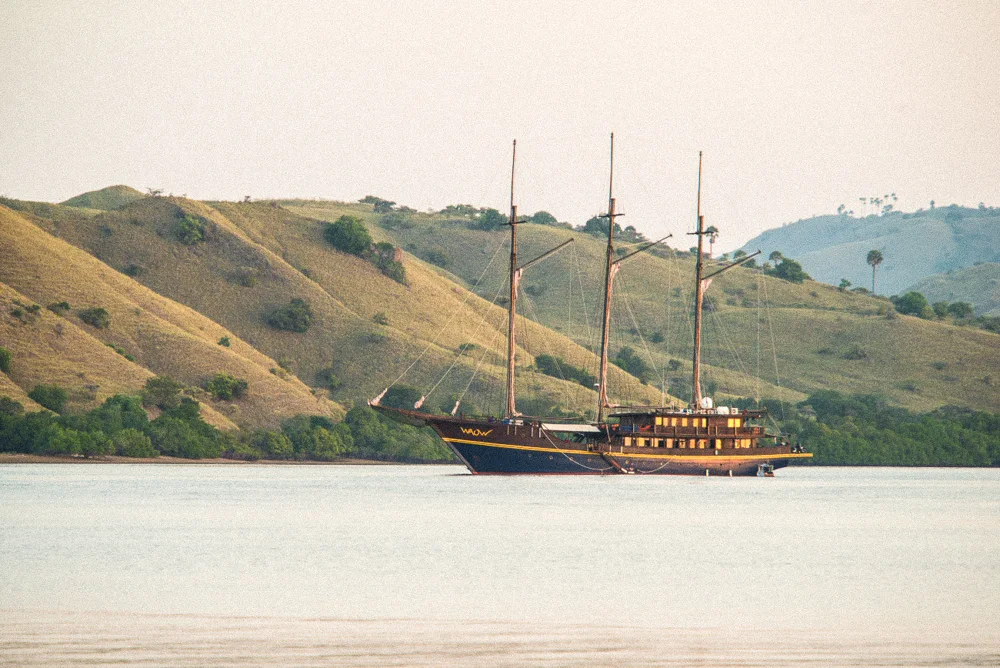
Explore other regions
Five ways.
One very big sea.


Ready for your next descent?
More than ten different ways into Indonesia.
And an entire world below the surface.